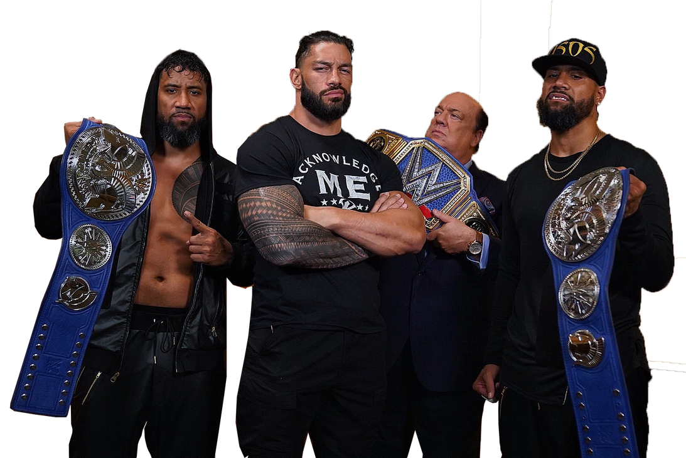
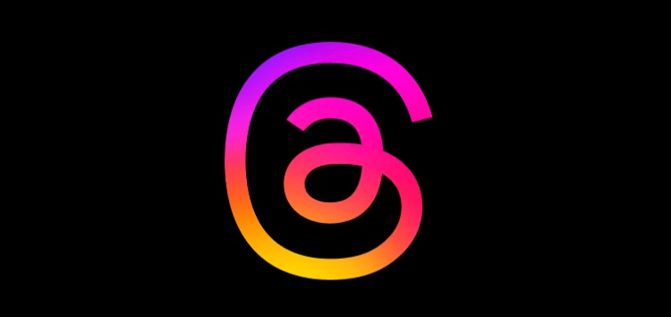
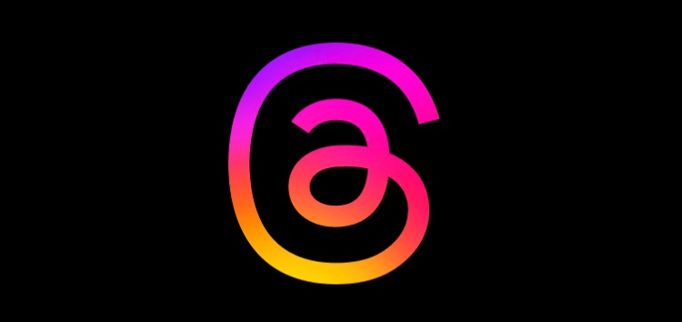

La lucha libre profesional ha evolucionado a lo largo de los años, y la contribución de WWE ha sido su enfoque en la promoción de historias y personajes. Si bien es cierto que el uso del micrófono y las habilidades de hablar en público son muy valoradas en la WWE, también es importante destacar que las luchas en sí mismas siguen siendo una parte integral del espectáculo. WWE ha estado apostando por la fórmula de las rivalidades y las historias con el objetivo de involucrar más al público y crear una conexión emocional con los luchadores. Un ejemplo destacado es la historia de Roman Reigns y su relación con The Bloodline, que ha sido un elemento central en la programación de la WWE. Esta narrativa ha permitido a Reigns mostrar su habilidad en el micrófono y construir una imagen de líder dominante y controvertido. Esto ha dado como resultado un enorme éxito al equilibrar las habilidades de hablar en público con la acción en el ring. La incorporación de elementos cinematográficos en las luchas y las historias ha abierto nuevas oportunidades para la empresa y ha generado un gran interés entre los fans. La combinación de ambos aspectos ha contribuido a mantener la WWE como una de las principales organizaciones de lucha libre profesional en el mundo.
NOTICIAS
Para bien o para mal, The Bloodline marcará una nueva tendencia en WWE
Verdadera razón del corte de pelo de Shotzi
En el reciente Friday Night SmackDown, después de que Bayley derrotara a Zelina Vega en una lucha individual que no trascendió mayor cosa, Shotzi apareció en la pantalla gigante a través de una viñeta pregrabada en la que se afeitó la cabeza mientras proclamaba que había tomado el control de su carrera. Mientras se pasaba la máquina por la cabeza, Shotzi se reía como una maniática, asustando así a Iyo Sky y Bayley, la última de las cuales se había burlado por tener un mechón del cabello de Shotzi durante semanas. Sin duda, las acciones de Shotzi fueron un poco sorpresivas y le da un toque extra y muy particular a su rivalidad contra Bayley, aunque hay una razón mucho más fuerte detrás de este corte de cabello. Tras la conclusión del programa, se reveló en las redes sociales que Shotzi se afeitó la cabeza para mostrar solidaridad con su hermana, quien actualmente se encuentra en quimioterapia como parte de su batalla contra el cáncer. Sin duda un gran gesto de Shotzi que ha sido traído en pantallas, a la vez que le dará mayor exposición en el corto plazo. En todo caso, lo importante es desear que su familiar pueda recuperarse de su dura batalla contra el cáncer.

VIDEOS
Mejores Combates en la WWE 2022
SIGUENOS EN NUESTRAS REDES
 
